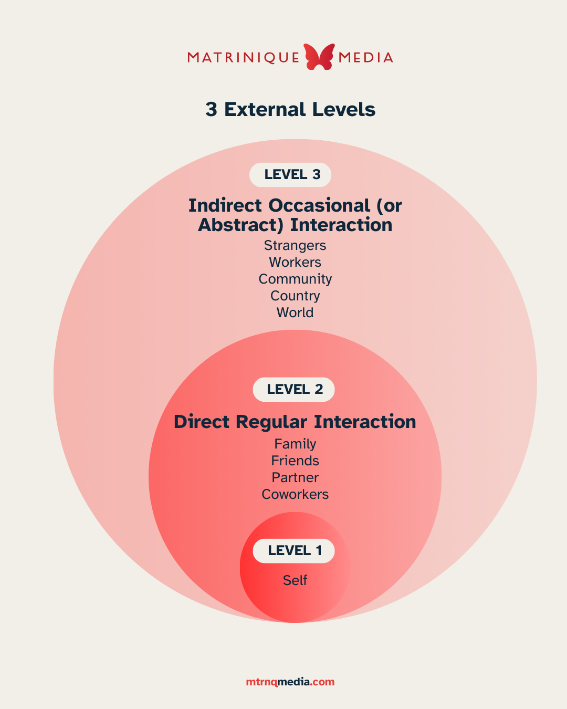

INTRODUCTION
The Framework

What is the External?
The external is anything outside of yourself that affects yourself. There are 2 levels of external, and they affect all three levels simultaneously.
Level 2 - Direct, Regular Interaction
Refers to the people and relationships that you interact with on a regular basis. The people you know personally, and who affect your day-to-day - and even your longer-term plans - personally.
Level 3 - Indirect, Occasional (or Abstract) Interaction
Refers to the communities that are affected by your presence. It could be your company, or your city, or your government, or your country. It involves things like news, politics, traveling, nature. It's the things in the real world that you don't directly interact with, but which you have a concept for and that still affects you personally. For example, a sense of loyalty for your sports team makes you feel proud when they win, or global warming makes you feel fear and grief, or knowing about countries experiencing catastrophes makes you feel altruistic and want to help.
Social Media is kind of a combination of all 3 levels simultaneously. It influences your moods and even your sense of identity as you interact with it, even though it's not always Direct External, or always Indirect External.
Issues with the External
- We are easily deceived by External illusions
- Social media is curated and is not an accurate representation of someone's actual world. But we feel envy and resentment, and try to copy them.
- The news doesn't report honestly - it sensationalizes for a variety of reasons, mostly profit, so we need to be discerning.
- Sellers make us believe that the answers to our deepest, most important problems can be found in a product or service, and not in ourselves.
- We attempt to control the External, then feel anger, grief, and disappointment if we are unable to.
- “Let go” is actually legitimately wise, but what does it mean exactly? How can we do it? This framework will attempt to answer some of these questions.
- We can influence the External a lot more than we dare think.
- When we assert ourselves in the world, when we commit to doing something, we actually do push the needle. You would be shocked by the amount of change possible in as little as a day.
Exercise
SELF-DISCOVERY
- What are some truths you believe about the world?
- Is there anything you feel you need to let go of?
- Are you comfortable asserting yourself, or do you think disappointment, anger, or potential pushback holds you back?